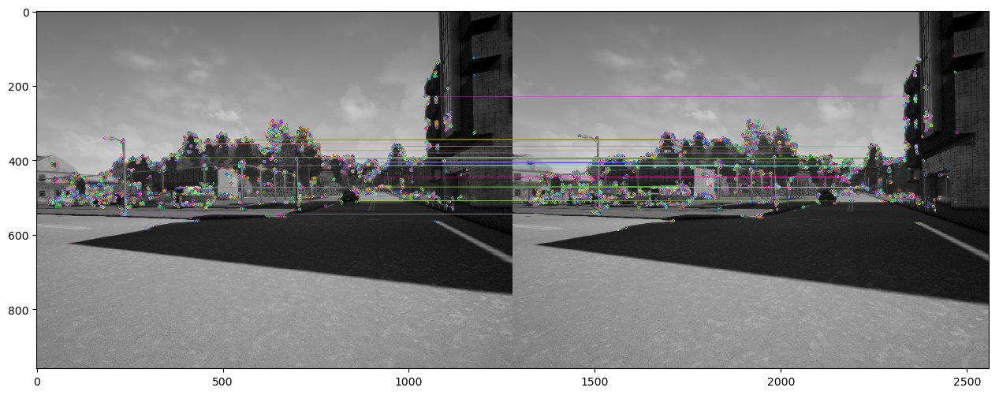

Autonomous Vehicle
Description
These tasks are components of Self-Driving Cars Specialization by University of Toronto.
Overview
- Visual Odometry
- Longtitudinal and Lateral Control
- Occupancy Grid Map Generation
- Planning
Visual Odometry
-
First, keypoints are detected, and ORB descriptors are extracted from each frame. Corresponding features between consecutive frames are matched, and outliers are removed using RANSAC. The essential matrix is then computed from the inlier matches and decomposed into rotation and translation to recover the camera's relative pose.

Implementation
Result
Longtitudinal and Lateral Control
-
PID controller is utilized for longitudinal control and a Stanley controller is employed for lateral control.
Implementation
Result
Occupancy Grid Map Generation
-
Use lidar scanner data from a moving vehicle to create an occupancy grid map. The process involves implementing the inverse scanner measurement model to extract occupancy probabilities and iteratively updating a belief map through log-odds calculations. This approach constructs a probabilistic occupancy grid that converges to the true map as more data is gathered.
Implementation
Result
Planning
-
There are 4 components including Path generation, Path collision checking, Velocity profile generation and Behavioural planning. With this pipeline, the system was simulated by CARLA.
Implementation
Demo
Example 1: Vehicle Avoidance
Example 2: Stop Sign
Related Skills and Tools
- Visual Odometry
- Essential Matrix
- PID
- Stanley Control
- Motion Planning
- Bayesian Probability Update
- CARLA Simulation